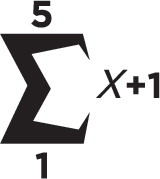

Σ求和符号，简称为和（也称为希腊符号sigma Σ），表示数字序列求和运算。
注意求和符号下面的1和上面的10以及右边的变量x ，它们表示求变量x 从1到10的和。
如果x ＝1，则求和运算如下所示：
1＋2＋3＋4＋5＋6＋7＋8＋9＋10＝55
在下一个示例中，1是在求和符号下面，5是在求和符号上面，右边是x ＋1。

这就表示从x ＝1开始，每次x 增加1个单位，一直到x ＝5：
（1＋1）＋（2＋1）＋（3＋1）＋（4＋1）＋（5＋1）＝20